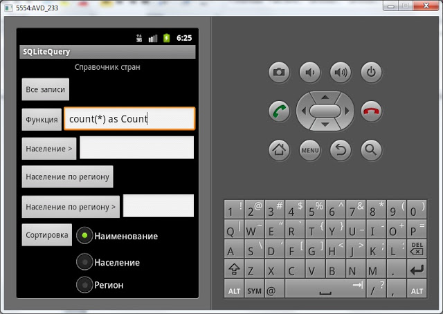
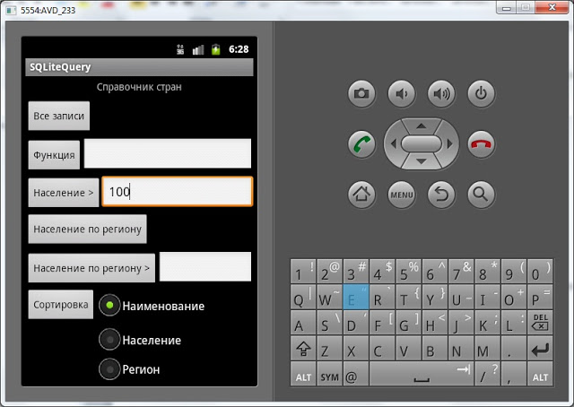
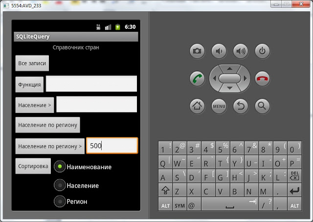
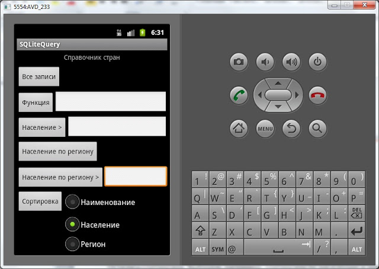

В этом уроке:
- подробно разбираем метод чтения данных query
- используем сортировку, группировку, условия, having
На прошлых уроках мы использовали метод query для чтения всех данных из таблицы. Мы использовали только имя таблицы в качестве входного параметра и получали все записи. Но у query есть и другие параметры:
columns – список полей, которые мы хотим получить
selection – строка условия WHERE
selectionArgs – массив аргументов для selection. В selection можно использовать знаки ?, которые будут заменены этими значениями.
groupBy - группировка
having – использование условий для агрегатных функций
orderBy - сортировка
Попробуем на примере их использовать. Создадим приложение – справочник стран. Возьмем десять стран и сохраним в БД их наименование, количество населения и регион. Реализуем в приложении следующие функции:
- вывод всех записей
- вывод значения агрегатной функции (SUM, MIN, MAX, COUNT)
- вывод стран с населением, больше чем указано
- группировка стран по региону
- вывод регионов с населением больше, чем указано
- сортировка стран по наименованию, населению или региону
Выводить все данные снова будем в лог.
Создадим проект:
Project name: P0361_SQLiteQuery
Build Target: Android 4.0
Application name: SQLiteQuery
Package name: ru.startandroid.develop.p0361sqlitequery
Create Activity: MainActivity
Открываем layout-файл main.xml и пишем:
<?xml version="1.0" encoding="utf-8"?>
<LinearLayout
xmlns:android="http://schemas.android.com/apk/res/android"
android:layout_width="fill_parent"
android:layout_height="fill_parent"
android:orientation="vertical">
<TextView
android:layout_width="fill_parent"
android:layout_height="wrap_content"
android:text="Справочник стран"
android:textSize="14sp"
android:gravity="center_horizontal"
android:layout_marginBottom="5dp"
android:layout_marginTop="5dp">
</TextView>
<Button
android:id="@+id/btnAll"
android:layout_width="wrap_content"
android:layout_height="wrap_content"
android:text="Все записи"
android:layout_marginTop="5dp">
</Button>
<LinearLayout
android:id="@+id/linearLayout1"
android:layout_width="match_parent"
android:layout_height="wrap_content"
android:layout_marginTop="5dp">
<Button
android:id="@+id/btnFunc"
android:layout_width="wrap_content"
android:layout_height="wrap_content"
android:text="Функция">
</Button>
<EditText
android:id="@+id/etFunc"
android:layout_width="wrap_content"
android:layout_height="wrap_content"
android:layout_weight="1">
<requestFocus>
</requestFocus>
</EditText>
</LinearLayout>
<LinearLayout
android:id="@+id/linearLayout2"
android:layout_width="match_parent"
android:layout_height="wrap_content"
android:layout_marginTop="5dp">
<Button
android:id="@+id/btnPeople"
android:layout_width="wrap_content"
android:layout_height="wrap_content"
android:text="Население">
</Button>
<EditText
android:id="@+id/etPeople"
android:layout_width="wrap_content"
android:layout_height="wrap_content"
android:layout_weight="1"
android:inputType="number">
</EditText>
</LinearLayout>
<Button
android:id="@+id/btnGroup"
android:layout_width="wrap_content"
android:layout_height="wrap_content"
android:text="Население по региону"
android:layout_marginTop="5dp">
</Button>
<LinearLayout
android:id="@+id/linearLayout4"
android:layout_width="match_parent"
android:layout_height="wrap_content"
android:layout_marginTop="5dp">
<Button
android:id="@+id/btnHaving"
android:layout_width="wrap_content"
android:layout_height="wrap_content"
android:text="Население по региону >">
</Button>
<EditText
android:id="@+id/etRegionPeople"
android:layout_width="wrap_content"
android:layout_height="wrap_content"
android:layout_weight="1"
android:inputType="number">
</EditText>
</LinearLayout>
<LinearLayout
android:id="@+id/linearLayout3"
android:layout_width="match_parent"
android:layout_height="wrap_content"
android:layout_marginTop="5dp">
<Button
android:id="@+id/btnSort"
android:layout_width="wrap_content"
android:layout_height="wrap_content"
android:text="Сортировка">
</Button>
<RadioGroup
android:id="@+id/rgSort"
android:layout_width="wrap_content"
android:layout_height="wrap_content">
<RadioButton
android:id="@+id/rName"
android:layout_width="wrap_content"
android:layout_height="wrap_content"
android:checked="true"
android:text="Наименование">
</RadioButton>
<RadioButton
android:id="@+id/rPeople"
android:layout_width="wrap_content"
android:layout_height="wrap_content"
android:text="Население">
</RadioButton>
<RadioButton
android:id="@+id/rRegion"
android:layout_width="wrap_content"
android:layout_height="wrap_content"
android:text="Регион">
</RadioButton>
</RadioGroup>
</LinearLayout>
</LinearLayout>6 кнопок – 6 функций, которые мы планируем реализовать. Поля для ввода значений, где это необходимо. Для сортировки используем RadioGroup.
Код для MainActivity.java:
package ru.startandroid.develop.p0361sqlitequery;
import android.app.Activity;
import android.content.ContentValues;
import android.content.Context;
import android.database.Cursor;
import android.database.sqlite.SQLiteDatabase;
import android.database.sqlite.SQLiteOpenHelper;
import android.os.Bundle;
import android.util.Log;
import android.view.View;
import android.view.View.OnClickListener;
import android.widget.Button;
import android.widget.EditText;
import android.widget.RadioGroup;
public class MainActivity extends Activity implements OnClickListener {
final String LOG_TAG = "myLogs";
String name[] = { "Китай", "США", "Бразилия", "Россия", "Япония",
"Германия", "Египет", "Италия", "Франция", "Канада" };
int people[] = { 1400, 311, 195, 142, 128, 82, 80, 60, 66, 35 };
String region[] = { "Азия", "Америка", "Америка", "Европа", "Азия",
"Европа", "Африка", "Европа", "Европа", "Америка" };
Button btnAll, btnFunc, btnPeople, btnSort, btnGroup, btnHaving;
EditText etFunc, etPeople, etRegionPeople;
RadioGroup rgSort;
DBHelper dbHelper;
SQLiteDatabase db;
/** Called when the activity is first created. */
public void onCreate(Bundle savedInstanceState) {
super.onCreate(savedInstanceState);
setContentView(R.layout.main);
btnAll = (Button) findViewById(R.id.btnAll);
btnAll.setOnClickListener(this);
btnFunc = (Button) findViewById(R.id.btnFunc);
btnFunc.setOnClickListener(this);
btnPeople = (Button) findViewById(R.id.btnPeople);
btnPeople.setOnClickListener(this);
btnSort = (Button) findViewById(R.id.btnSort);
btnSort.setOnClickListener(this);
btnGroup = (Button) findViewById(R.id.btnGroup);
btnGroup.setOnClickListener(this);
btnHaving = (Button) findViewById(R.id.btnHaving);
btnHaving.setOnClickListener(this);
etFunc = (EditText) findViewById(R.id.etFunc);
etPeople = (EditText) findViewById(R.id.etPeople);
etRegionPeople = (EditText) findViewById(R.id.etRegionPeople);
rgSort = (RadioGroup) findViewById(R.id.rgSort);
dbHelper = new DBHelper(this);
// подключаемся к базе
db = dbHelper.getWritableDatabase();
// проверка существования записей
Cursor c = db.query("mytable", null, null, null, null, null, null);
if (c.getCount() == 0) {
ContentValues cv = new ContentValues();
// заполним таблицу
for (int i = 0; i < 10; i++) {
cv.put("name", name[i]);
cv.put("people", people[i]);
cv.put("region", region[i]);
Log.d(LOG_TAG, "id = " + db.insert("mytable", null, cv));
}
}
c.close();
dbHelper.close();
// эмулируем нажатие кнопки btnAll
onClick(btnAll);
}
public void onClick(View v) {
// подключаемся к базе
db = dbHelper.getWritableDatabase();
// данные с экрана
String sFunc = etFunc.getText().toString();
String sPeople = etPeople.getText().toString();
String sRegionPeople = etRegionPeople.getText().toString();
// переменные для query
String[] columns = null;
String selection = null;
String[] selectionArgs = null;
String groupBy = null;
String having = null;
String orderBy = null;
// курсор
Cursor c = null;
// определяем нажатую кнопку
switch (v.getId()) {
// Все записи
case R.id.btnAll:
Log.d(LOG_TAG, "--- Все записи ---");
c = db.query("mytable", null, null, null, null, null, null);
break;
// Функция
case R.id.btnFunc:
Log.d(LOG_TAG, "--- Функция " + sFunc + " ---");
columns = new String[] { sFunc };
c = db.query("mytable", columns, null, null, null, null, null);
break;
// Население больше, чем
case R.id.btnPeople:
Log.d(LOG_TAG, "--- Население больше " + sPeople + " ---");
selection = "people > ?";
selectionArgs = new String[] { sPeople };
c = db.query("mytable", null, selection, selectionArgs, null, null,
null);
break;
// Население по региону
case R.id.btnGroup:
Log.d(LOG_TAG, "--- Население по региону ---");
columns = new String[] { "region", "sum(people) as people" };
groupBy = "region";
c = db.query("mytable", columns, null, null, groupBy, null, null);
break;
// Население по региону больше чем
case R.id.btnHaving:
Log.d(LOG_TAG, "--- Регионы с населением больше " + sRegionPeople
+ " ---");
columns = new String[] { "region", "sum(people) as people" };
groupBy = "region";
having = "sum(people) > " + sRegionPeople;
c = db.query("mytable", columns, null, null, groupBy, having, null);
break;
// Сортировка
case R.id.btnSort:
// сортировка по
switch (rgSort.getCheckedRadioButtonId()) {
// наименование
case R.id.rName:
Log.d(LOG_TAG, "--- Сортировка по наименованию ---");
orderBy = "name";
break;
// население
case R.id.rPeople:
Log.d(LOG_TAG, "--- Сортировка по населению ---");
orderBy = "people";
break;
// регион
case R.id.rRegion:
Log.d(LOG_TAG, "--- Сортировка по региону ---");
orderBy = "region";
break;
}
c = db.query("mytable", null, null, null, null, null, orderBy);
break;
}
if (c != null) {
if (c.moveToFirst()) {
String str;
do {
str = "";
for (String cn : c.getColumnNames()) {
str = str.concat(cn + " = "
+ c.getString(c.getColumnIndex(cn)) + "; ");
}
Log.d(LOG_TAG, str);
} while (c.moveToNext());
}
c.close();
} else
Log.d(LOG_TAG, "Cursor is null");
dbHelper.close();
}
class DBHelper extends SQLiteOpenHelper {
public DBHelper(Context context) {
// конструктор суперкласса
super(context, "myDB", null, 1);
}
public void onCreate(SQLiteDatabase db) {
Log.d(LOG_TAG, "--- onCreate database ---");
// создаем таблицу с полями
db.execSQL("create table mytable ("
+ "id integer primary key autoincrement," + "name text,"
+ "people integer," + "region text" + ");");
}
public void onUpgrade(SQLiteDatabase db, int oldVersion, int newVersion) {
}
}
}Никаких проверок на вводимые с экрана значения я не делал, чтобы не перегружать код. Он и так немаленький получился, но ничего сложного в нем нет.
Три массива данных name, people, region. Это наименования стран, их население (в млн.) и регионы, к которым страны относятся. По этим данным мы будем заполнять таблицу.
В методе onCreate мы определяем и находим экранные элементы, присваиваем обработчики, создаем объект dbHelper для управления БД, подключаемся к базе и получаем объект db для работы с БД, проверяем наличие записей в таблице, если нет ничего – заполняем ее данными, закрываем соединение и эмулируем нажатие кнопки Все записи - чтобы сразу вывести весь список.
В методе onClick – подключаемся к базе, читаем данные с экранных полей в переменные, описываем переменные, которые будем использовать в методе query, и курсор, и смотрим, какая кнопка была нажата.
btnAll – вывод всех записей. Вызываем метод query с именем таблицы и null для остальных параметров. Это уже знакомо, делали на прошлом уроке.
btnFunc – вывод значения агрегатной функции (или любого поля). Использую параметр columns, в который надо записать поля, которые я хотел бы получить из таблицы, т.е. то, что обычно перечисляется после слова SELECT в SQL-запросе. columns имеет тип String[] – массив строк. Создаем массив из одного значения, которое считано с поля etFunc на экране. Запускаем query.
btnPeople – вывод стран с населением больше введенного на экране количества. Используем selection для формирования условия. При этом используем один аргумент - ?. Значение аргумента задаем в selectionArgs – это sPeople – содержимое поля etPeople. Запускаем query.
btnGroup – группировка стран по регионам и вывод общее количество населения. Используем columns для указания столбцов, которые хотели бы получить – регион и сумма населения. В groupBy указываем, что группировка будет по региону. Запускаем query.
btnHaving – вывод регионов с населением больше указанного числа. Полностью аналогично случаю с группировкой, но добавляется условие в параметре having – сумма населения региона должна быть меньше sRegionPeople (значение etRegionPeople с экрана).
btnSort – сортировка стран. Определяем какой RadioButton включен и соответственно указываем в orderBy поле для сортировки данных. Запускаем query.
В выше описанных случаях мы запускали query и получали объект c класса Cursor. Далее мы проверяем, что он существует и в нем есть записи (moveToFirst). Если все ок, то мы запускаем перебор записей в цикле do … while (c.moveToNext()). Для каждой записи перебираем названия полей (getColumnNames), получаем по каждому полю его номер и извлекаем данные методом getString. Формируем список полей и значений в переменную str, которую потом выводим в лог. После всего этого закрываем соединение.
Ну и в конце кода идет описание вложенного класса DBHelper. Тут ничего не изменилось с прошлых уроков. Только при создании таблицы используются другие поля.
Сохраняем все и запускаем приложение.
В лог при запуске вывелись все записи, как если бы мы нажали кнопку «Все записи».
--- Все записи ---
id = 1; name = Китай; people = 1400; region = Азия;
id = 2; name = США; people = 311; region = Америка;
id = 3; name = Бразилия; people = 195; region = Америка;
id = 4; name = Россия; people = 142; region = Европа;
id = 5; name = Япония; people = 128; region = Азия;
id = 6; name = Германия; people = 82; region = Европа;
id = 7; name = Египет; people = 80; region = Африка;
id = 8; name = Италия; people = 60; region = Европа;
id = 9; name = Франция; people = 66; region = Европа;
id = 10; name = Канада; people = 35; region = Америка;
Т.е. таблица заполнена данными, можно работать.
Попробуем использовать агрегатную функцию. Например – получим кол-во записей. Вводим значение:

жмем кнопку Функция. Смотрим лог:
--- Функция count(*) as Count ---
Count = 10;
Все верно, 10 записей в таблице.
Покажем страны с населением больше 100 млн. Вводим 100 и жмем Население >

Лог:
--- Население больше 100 ---
id = 1; name = Китай; people = 1400; region = Азия;
id = 2; name = США; people = 311; region = Америка;
id = 3; name = Бразилия; people = 195; region = Америка;
id = 4; name = Россия; people = 142; region = Европа;
id = 5; name = Япония; people = 128; region = Азия;
Сгруппируем страны по региону и покажем население регионов. Нажмем кнопку Население по региону
Лог:
--- Население по региону ---
region = Азия; people = 1528;
region = Америка; people = 541;
region = Африка; people = 80;
region = Европа; people = 350;
Теперь отобразим только те регионы, в которых население выше 500 млн.чел. Вводим 500 и жмем Население по региону >

Лог:
--- Регионы с населением больше 500 ---
region = Азия; people = 1528;
region = Америка; people = 541;
Осталась сортировка. Выберем, например, сортировку по населению и жмем кнопку Сортировка

Лог:
--- Сортировка по населению ---
id = 10; name = Канада; people = 35; region = Америка;
id = 8; name = Италия; people = 60; region = Европа;
id = 9; name = Франция; people = 66; region = Европа;
id = 7; name = Египет; people = 80; region = Африка;
id = 6; name = Германия; people = 82; region = Европа;
id = 5; name = Япония; people = 128; region = Азия;
id = 4; name = Россия; people = 142; region = Европа;
id = 3; name = Бразилия; people = 195; region = Америка;
id = 2; name = США; people = 311; region = Америка;
id = 1; name = Китай; people = 1400; region = Азия;
По умолчанию сортировка идет по возрастанию.
Все работает так, как и должно. На этих примерах мы использовали все основные параметры метода query. Кроме описанных параметров, у метода query есть также реализации с использованием параметров limit и distinct. Я не стал их здесь отдельно показывать. Расскажу на словах:
limit – строковый параметр, указывается в формате [offset], rows. Т.е. если в query в качестве limit передать строку "5" - то запрос выдаст только пять первых записей. Если же передать "3,5", то запрос выдаст пять записей, начиная с четвертой (НЕ с третьей).
distinct – это boolean-параметр, удаление дубликатов. Может быть true или false.
Надеюсь, что метод query, который сначала казался большим скоплением параметров, стал понятен и прост.